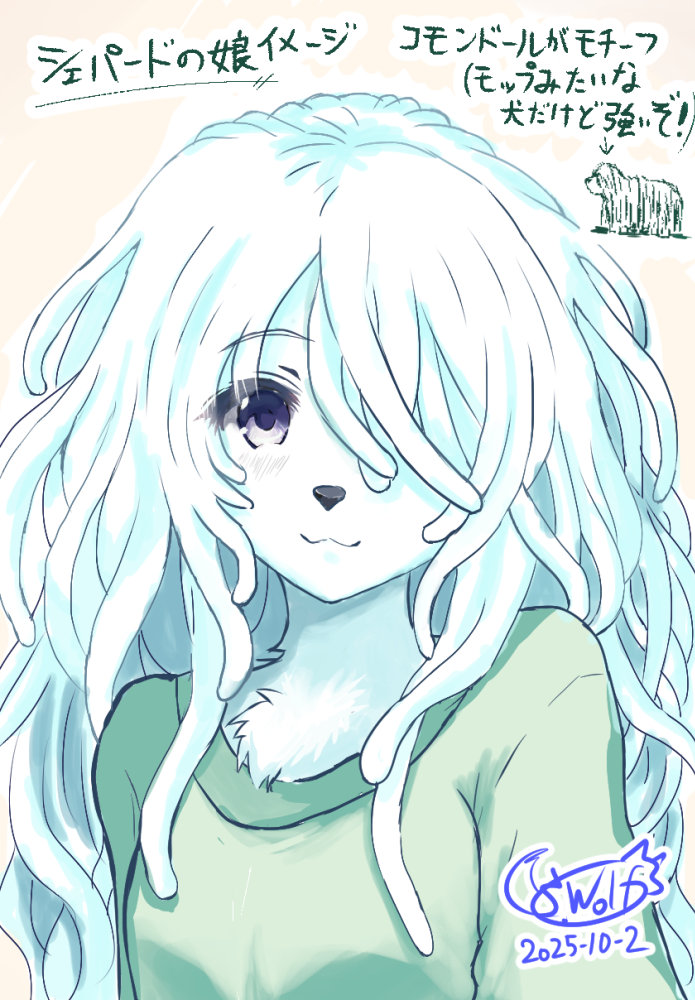
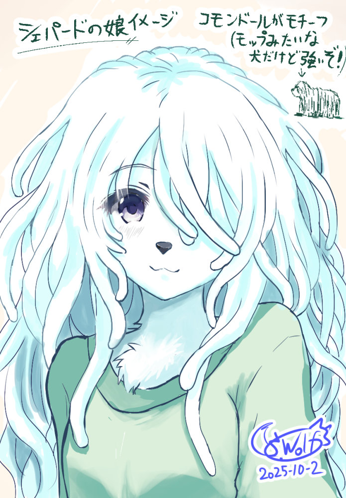

■2025-10-04 (土) 『シェパード捜査録』第2話動画公開！+シェパード娘の話▼
ということで私の幻の作品『シェパード捜査録』の第2話が公開！ 全2話なので今回が最終回となります！
せっかくなので紹介イラストもアップ！
先に1話を見たい人はこちらから！→◆『シェパード捜査録』第1話【復讐のドン】 動画へ
問題ない方はこちら！ 第2話【マリオネット】↓
だが5ヶ月後のある日、それがきっかけでシェパードは「組織」と呼ばれる者達に狙われつつあるのではないか、と、前回シェパードに協力した元マフィアのドン・ゲーターが言う。
彼らはシェパードの娘も考慮に入れて、この状況への対処を始めるのだが……！？
第1話は状況解説にストーリーリソースを使ってしまった分、第2話はその文脈を活用してブンブン視聴者の皆さまを振り回す内容となっております！
前話と比べて見ると2話は面白いと思いますので、やっぱり「文脈がない状態」の第1話をいかに面白く作るかが、お話作りの一番難しいところだと感じます。コンテンツが溢れすぎた時代になるとますます「初速」が必要になる！
何かのパロディを前提にしたり、異世界転生みたいなお約束をなぞるのってやっぱり初速の面で強いなあ、と思ってしまいます。
もちろん、一般化した内容でそれ（パロディやお約束）に近いこともできると思うんですけれどね！ うまいことやっていきましょう！
アイデアとしてぼんやりあったのを形にしたものです！
シェパード娘イメージ画↓ マズルの短いケモノっ子を描いたのは久しぶりです。

こんな感じでいちおう劇中で一番かわいい系のイメージなんですよシェパード娘！
モチーフが牧羊犬なのはシェパードと同じなんですが、見た目が全然違う感じのキャラです！
そのモチーフは『コモンドール』犬！ 歩くモップみたいな見た目の犬！！
牧羊犬なのですが特徴的なのはその毛！！
なんと成長にともなって自動で被毛がロープ状になっていくという犬種で、これが防護と寒さ対策を両立！ 毛が鎧となって敵の牙を通しにくくなり、そして見た目がまるでモップのようになるのです！
コモンドールは、遠目には羊たちにまぎれることができ、家族を第一に守るように本能づけられていて警戒心が強く、襲ってくる狼などを撃退できる能力も持っているそうです。
襲ってくる狼視点で「羊の群れの一頭かと思ったらコモンドールだったグワー！」みたいな奇襲もできたのでは？ なんて伝説的に語られることもあります！ 強いぞ！
本編でも、そんなステルス性と警戒心はシェパード娘にも活かされていますが、仲間を守る気持ちは発揮できなかったようです。悲しい。
でもまだ幼いと思われるので生存力最重視の判断は良いことだと思います。うまく隠れたらモップの先が落ちてるようにしか見えないのかもしれない！ そんな都合のいいことがあるかは知らないですが、なんとなくシェパードとその娘は運の良さ255という設定がありそうですからね！
ちなみに、彼女には名前は本当についていません。
作中では犬種がキャラ名になってるところから、たぶん名前が付いたら「コモンちゃん」とかになってそうですね！
そしてなぜ劇中であんな触手だったかという謎については、色んな解釈があると思いますのでそこは各々のご想像にお任せします！
リアル寄り解釈としては、コモンドールは毛を洗うのが非常に大変らしいので、病室で髪の毛を吊り下げて効率的に乾かしていたのがそう見えたという説などが有力そうです。
（実際、コモンドールのコード状の毛を洗った後はそのままだとカビが生えたり生臭くなったりするので、1本ずつ分けて空気が通るようにしたり、引っ張って離した状態で乾かしたりすることもあるそうです。大変だー！）
え、じゃあ謎のヌチャヌチャ音はなんだって！？ 納豆でもかき回してたんじゃないですかね！
ということで、作ったはいいものの公開できなかった作品『シェパード捜査録』の保全ミッションは、これにてきれいに片付きました！
作品ページやアーカイブページにも動画を載せたりして、見られる環境はバッチリ！
まだ旅立つ時ははるか先でも、終活の準備自体は早めに整えておいた方がいいですからね！
歴史の流れの中だと個人の制作物は大したものではないかもしれませんが、せっかくなので元気なうちに足跡をきれいに整えておきたいと思います！
いつか時代ごとの創作物考証に使われたりするかもしれません。特にフリーゲーム周りはインターネット資産でありながら歴史がまとまって残らないですからね！
次に取りかかるのは『シルフェイド学院物語』のDLsite対応リファイン作業！
10月中に終われるといいのですが、果たしてどこまでやれるか！ なるべく努力します！
でも10/16発売のポケモンZ-Aは遊ばせていただきたいと思います！ レジェンズ系は前作アルセウスがすごく好みに合ったので、今回も楽しませていただきたいと思っております！
今年は年始からウディタ修正が忙しすぎて、まだまともに市販ゲームを遊べていないので、1本くらいは最新ゲームに触れなければ！ 面白くて学ぶところがいっぱいあるといいなー！
という感じで、やることを日々進めていきます！
残る終活作業としてシル学の保全が終われば、さらにスッキリして、創造に全力を使っていい自由な時間がやってくるはず！
10月もがんばりますぞーうおおー！！
せっかくなので紹介イラストもアップ！
◆『シェパード捜査録』第2話、動画公開！
【第2話『マリオネット』映像！】
ということで前回に引き続き、『シェパード捜査録』の第2話【マリオネット】も合成音声を付けて映像としてアップしました！先に1話を見たい人はこちらから！→◆『シェパード捜査録』第1話【復讐のドン】 動画へ
問題ない方はこちら！ 第2話【マリオネット】↓
【第2話のあらすじ】
娘の入院費の支払いにも困るほど貧しい刑事シェパードは、前回のレースで「組織」の陰謀を止めることに成功した。だが5ヶ月後のある日、それがきっかけでシェパードは「組織」と呼ばれる者達に狙われつつあるのではないか、と、前回シェパードに協力した元マフィアのドン・ゲーターが言う。
彼らはシェパードの娘も考慮に入れて、この状況への対処を始めるのだが……！？
【第2話についてコメント】
ということで、今回が『シェパード捜査録』全2話の最終回となります！第1話は状況解説にストーリーリソースを使ってしまった分、第2話はその文脈を活用してブンブン視聴者の皆さまを振り回す内容となっております！
前話と比べて見ると2話は面白いと思いますので、やっぱり「文脈がない状態」の第1話をいかに面白く作るかが、お話作りの一番難しいところだと感じます。コンテンツが溢れすぎた時代になるとますます「初速」が必要になる！
何かのパロディを前提にしたり、異世界転生みたいなお約束をなぞるのってやっぱり初速の面で強いなあ、と思ってしまいます。
もちろん、一般化した内容でそれ（パロディやお約束）に近いこともできると思うんですけれどね！ うまいことやっていきましょう！
【シェパードの娘の正体は……これだ！！】
紹介するチャンスとしては最後だと思ったので、今回は謎に包まれた『シェパードの娘（名前がない）』の正体をご紹介！アイデアとしてぼんやりあったのを形にしたものです！
シェパード娘イメージ画↓ マズルの短いケモノっ子を描いたのは久しぶりです。

こんな感じでいちおう劇中で一番かわいい系のイメージなんですよシェパード娘！
モチーフが牧羊犬なのはシェパードと同じなんですが、見た目が全然違う感じのキャラです！
そのモチーフは『コモンドール』犬！ 歩くモップみたいな見た目の犬！！
牧羊犬なのですが特徴的なのはその毛！！
なんと成長にともなって自動で被毛がロープ状になっていくという犬種で、これが防護と寒さ対策を両立！ 毛が鎧となって敵の牙を通しにくくなり、そして見た目がまるでモップのようになるのです！
コモンドールは、遠目には羊たちにまぎれることができ、家族を第一に守るように本能づけられていて警戒心が強く、襲ってくる狼などを撃退できる能力も持っているそうです。
襲ってくる狼視点で「羊の群れの一頭かと思ったらコモンドールだったグワー！」みたいな奇襲もできたのでは？ なんて伝説的に語られることもあります！ 強いぞ！
本編でも、そんなステルス性と警戒心はシェパード娘にも活かされていますが、仲間を守る気持ちは発揮できなかったようです。悲しい。
でもまだ幼いと思われるので生存力最重視の判断は良いことだと思います。うまく隠れたらモップの先が落ちてるようにしか見えないのかもしれない！ そんな都合のいいことがあるかは知らないですが、なんとなくシェパードとその娘は運の良さ255という設定がありそうですからね！
ちなみに、彼女には名前は本当についていません。
作中では犬種がキャラ名になってるところから、たぶん名前が付いたら「コモンちゃん」とかになってそうですね！
そしてなぜ劇中であんな触手だったかという謎については、色んな解釈があると思いますのでそこは各々のご想像にお任せします！
リアル寄り解釈としては、コモンドールは毛を洗うのが非常に大変らしいので、病室で髪の毛を吊り下げて効率的に乾かしていたのがそう見えたという説などが有力そうです。
（実際、コモンドールのコード状の毛を洗った後はそのままだとカビが生えたり生臭くなったりするので、1本ずつ分けて空気が通るようにしたり、引っ張って離した状態で乾かしたりすることもあるそうです。大変だー！）
え、じゃあ謎のヌチャヌチャ音はなんだって！？ 納豆でもかき回してたんじゃないですかね！
ということで、作ったはいいものの公開できなかった作品『シェパード捜査録』の保全ミッションは、これにてきれいに片付きました！
作品ページやアーカイブページにも動画を載せたりして、見られる環境はバッチリ！
まだ旅立つ時ははるか先でも、終活の準備自体は早めに整えておいた方がいいですからね！
歴史の流れの中だと個人の制作物は大したものではないかもしれませんが、せっかくなので元気なうちに足跡をきれいに整えておきたいと思います！
いつか時代ごとの創作物考証に使われたりするかもしれません。特にフリーゲーム周りはインターネット資産でありながら歴史がまとまって残らないですからね！
次に取りかかるのは『シルフェイド学院物語』のDLsite対応リファイン作業！
10月中に終われるといいのですが、果たしてどこまでやれるか！ なるべく努力します！
でも10/16発売のポケモンZ-Aは遊ばせていただきたいと思います！ レジェンズ系は前作アルセウスがすごく好みに合ったので、今回も楽しませていただきたいと思っております！
今年は年始からウディタ修正が忙しすぎて、まだまともに市販ゲームを遊べていないので、1本くらいは最新ゲームに触れなければ！ 面白くて学ぶところがいっぱいあるといいなー！
という感じで、やることを日々進めていきます！
残る終活作業としてシル学の保全が終われば、さらにスッキリして、創造に全力を使っていい自由な時間がやってくるはず！
10月もがんばりますぞーうおおー！！